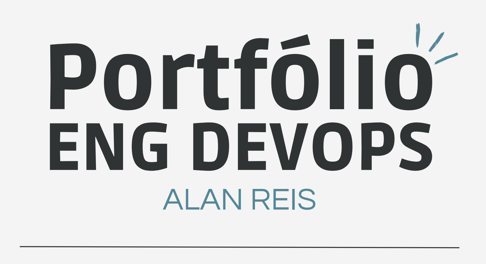

Sobre mim

Olá, sou Alan, atualmente cursando Engenharia de Software na Unicesumar. Minha jornada na tecnologia começou em 2023 com o curso de Tecnologia em Jogos Digitais, onde me deparei pela primeira vez com o mundo da programação. Desde então, meu foco se direcionou para a área de DevOps, onde tenho me dedicado a dominar as melhores práticas em automação, integração contínua e infraestrutura como código. Sou apaixonado por tecnologia e estou sempre em busca de novas oportunidades para expandir meus conhecimentos e crescer profissionalmente neste campo dinâmico e desafiador.
Projetos
Criar um bot para automatizar tarefas repetitivas
Utilize Python e bibliotecas como Slack API para criar um bot que possa executar tarefas como abrir tickets, responder a perguntas frequentes ou gerenciar recursos em nuvem..

Criar um dashboard para monitorar a saúde de um servidor
Prometheus e Grafana para coletar métricas de um servidor e criar um dashboard visual para monitorar seu desempenho.

Criar um script para provisionar um ambiente de desenvolvimento
Utilize ferramentas como Ansible ou Terraform para configurar automaticamente um servidor virtual com as ferramentas e softwares necessários para um desenvolvedor iniciar um novo projeto.
Provisionar um cluster Kubernetes
Utilize Terraform para criar um cluster Kubernetes em uma nuvem pública (AWS, GCP ou Azure) e deployar um aplicativo simples nele.
Habilidades
- AWS (Amazon Web Services) – Experiência em configuração, gerenciamento de instâncias EC2, S3, e RDS, além de integração com outros serviços de nuvem.
- Docker: Contêineres, Docker Compose – Criação e orquestração de contêineres, otimização de ambientes de desenvolvimento e produção.
- Kubernetes: Criação e gerenciamento de clusters, implementação de estratégias de escalabilidade horizontal e vertical para aplicações mission-critical, utilizando recursos como Deployments, Services, Ingresses e NetworkPolicies.
- CI/CD: Implementação de pipelines CI/CD robustos com Jenkins, GitLab CI e GitHub Actions, abrangendo desde a construção e testes até o deploy em diversos ambientes. Experiência em testes unitários, de integração e end-to-end, utilizando ferramentas como Jest e Selenium.
- IaC: Provisionamento e gerenciamento de infraestrutura com Terraform e Ansible, garantindo a reprodutibilidade e escalabilidade dos ambientes. Criação de módulos personalizados para automatizar tarefas repetitivas.
- Prometheus, Grafana – Configuração e customização de sistemas de monitoramento, dashboards, e alertas para garantir a disponibilidade e desempenho das aplicações.
- Redes: Conhecimento em redes TCP/IP, configuração de roteamento e firewalls, VPNs, e práticas de segurança em rede.
- Git Controle de Versionamento: Git GitHub GitLab– Uso avançado de versionamento de código, gerenciamento de branches, pull requests e integração com CI/CD.
- Github versionamento de código, Utilização de ferramentas do GitHub, como GitHub Actions para automatizar workflows
- GitLab Configuração de runners para executar pipelines em diferentes plataformas
-
- Python para a criação de scripts e automação
- JavaScript (desenvolvimento fullstack)


Certificações
- Certificação AWS Cloud Practitioner (em andamento)
- Certificação Docker DCA (em andamento)